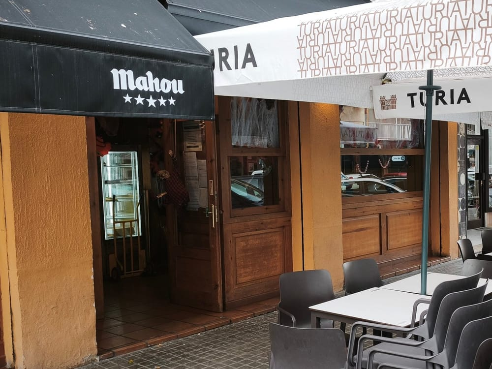
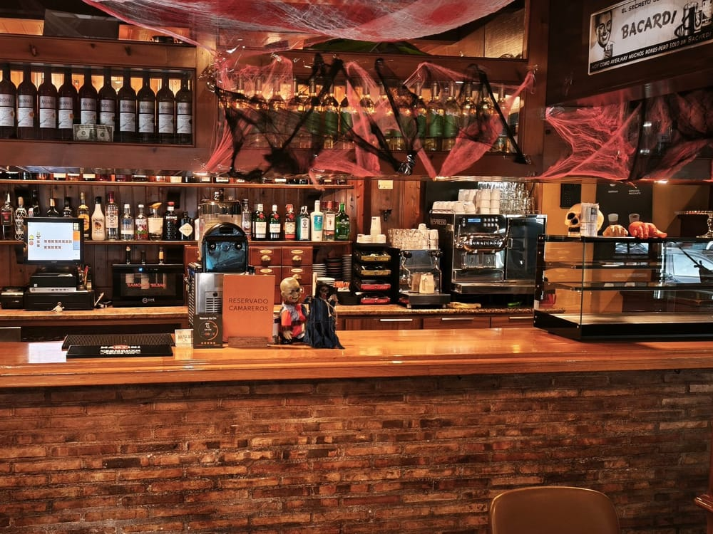
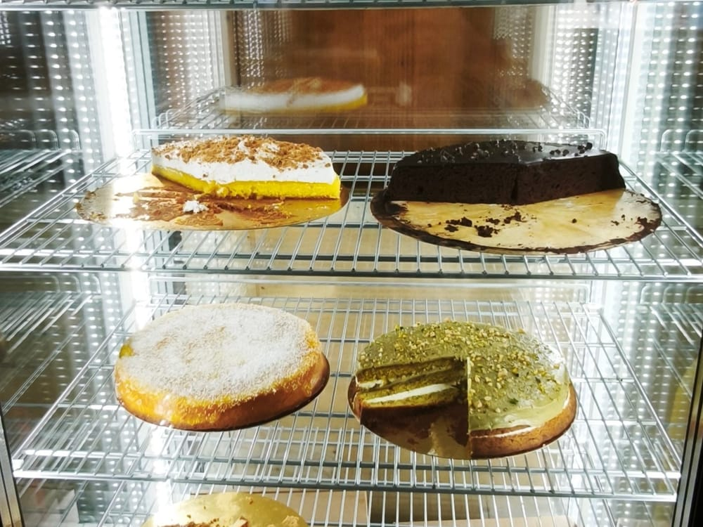

La carta
Desayunos y almuerzos · Precios con IVA incluido
Tostadas
Tostada de aceite y sal
1,50 €Tostada de tomate y jamón
3,50 €Tostada de tomate y aguacate
4,00 €Tostada de mantequilla y mermelada
1,60 €Tostada de tomate y atún
3,00 €Tostada de tomate, jamón y queso
3,50 €
Bocadillos

Bocadillo de entrecot
9,50 €Bacon, cebolla caramelizada, queso cottage, salsa ranch y salsa BBQ con miel y mostaza

Chivito Bodeguita
7,00 €Pollo asado, lechuga, tomate, bacon, queso y mayonesa
Bocadillo de sobrasada, jamón y cebolla
6,00 €Bocadillo de tortilla de patata
5,50 €Bocadillo de bacon y queso
6,50 €
Dulces y cafés

Tarta
4,50 €
Croissant
1,90 €Café solo
1,40 €Café con leche
1,90 €Cortado
1,60 €Cappuccino
2,20 €Cafés más elaborados
Carta aparte, pídela en barra
Té e infusiones
2,20 €
Si tienes alguna alergia o intolerancia, díselo al camarero: te informamos de los alérgenos de cada plato.
¿Te ha gustado? Déjanos tu reseña en Google
Déjanos tu reseña (se abre en otra web)